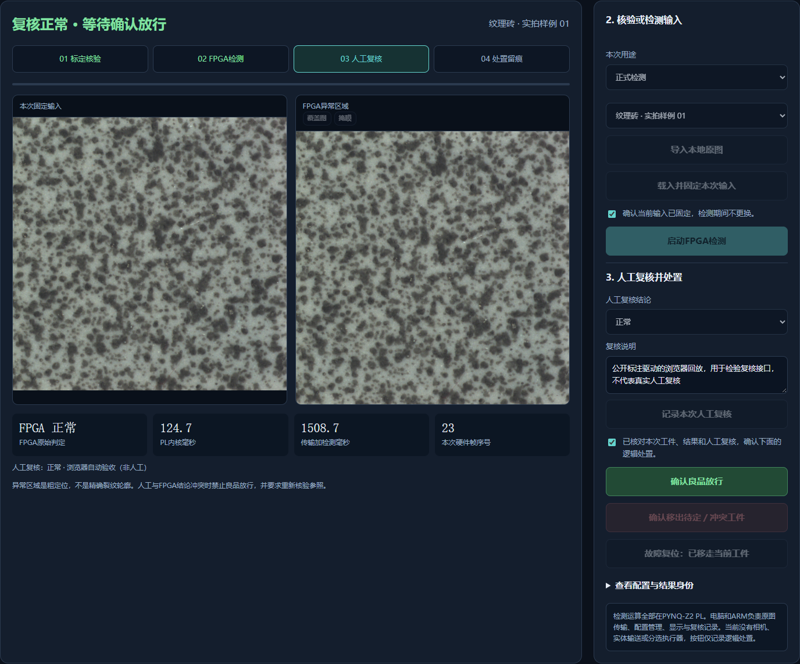
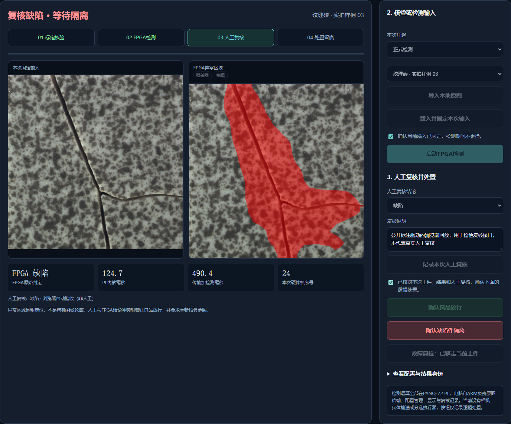

2026年10月27日。固定100MHz FPGA检测核心不变，增加材质与参照绑定、工位核验、人工复核接口和可导出的处置链。运行时图像变换、CNN、投影、参照距离、评分及掩膜仍由PL完成。电脑与ARM仅负责传输、校验和工作流程。
当前部署两套既有参照：纹理瓷砖与陶瓦实验参照。本步骤是对已部署参照的工位适用性核验，不是在线CNN训练、任意花色自动学习、实体相机标定或独立准确率认证。未提供真实相机、输送及剔除执行器。
| 项目 | 结果与范围 |
|---|---|
| 控制逻辑测试 | 32项通过，显式假后端；不是图像准确率证据。 |
| 真实开发板API闭环回放 | 22次实际PL推理、38次不合规操作拒绝，4份核验凭证；两种参照无需重新下载BIT即可切换。 |
| 故障注入 | 人工错误结论不能覆盖FPGA报警放行；外部把板端参照换掉后，旧正常结果处置被拦截，原复核保留为作废记录。 |
| 真实浏览器操作回放 | 2次实际PL推理：正常复核放行、缺陷复核隔离；复核前放行按钮不可用，桌面和手机布局无横向溢出／脚本错误。 |
| 117张停驻节奏回归 | 分数、完整原图掩膜及元数据逐值一致，仅帧序号除外。33正常零误报，84缺陷检出；这是暴露开发集，不是新的准确率验收。 |
| 回归耗时口径 | 逐图间隔1秒，批次199.17秒；PL均时0.12471秒，传输加检测均时0.52673秒，含4次连接重试。不得据此宣称连续视频吞吐。 |
所有“人工复核接口”验收由明确命名的自动化脚本或浏览器回放驱动，使用公开图片标签，日志操作员标为自动验收／非真实人工。这证明接口及联锁运行，不冒充真人已逐张复核或现场产线运行。
已通过包内启动脚本完成一次新的易失BIT／ELF下载及参照加载。新目录、新启动编号下，又独立跑完22次闭环回放和38次拒绝操作，结果通过。重启服务不恢复旧工件结果，既有材质和追溯记录仍保存。
第一版控制固件遇到以太网链路速度断言；已保留现场寄存器及调用位置。修复在链路已协商后再次阻塞重协商的恢复路径，保留厂商代码许可证，并拒绝无效速度进入MAC驱动。只修改以太网控制，没有图像算法移到ARM。
另一次无额外间隔的批次在39张逐值一致后连接重置，之后DDR读回显示控制器处于复位，根因尚未确定。失败记录保留。后续停驻节奏回归通过，不能据此宣布连续高负载或长期供电稳定性已完成验收。
下图是开发板计算结果与自动化浏览器回放界面，来源为MVTec公开实拍开发样例；红色为PL粗异常区域，不是精确裂纹轮廓。


完整摘要 · 22次闭环 · 38次拒绝 · 复核追溯JSON · 复核追溯CSV · 117张回归 · 失败批次说明 · 未知参照拒绝 · 通信恢复修改
MVTec照片与派生模型遵循CC BY-NC-SA4.0，陶瓦来源ceramics-defects-detection遵循CC BY4.0，AMD/Xilinx源代码保留原许可。没有比赛网站提交，原Word报告仍为旧稳定版快照，本轮以补充记录为准。